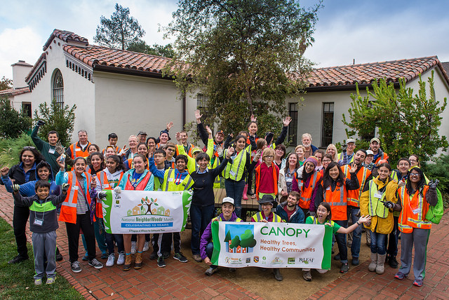
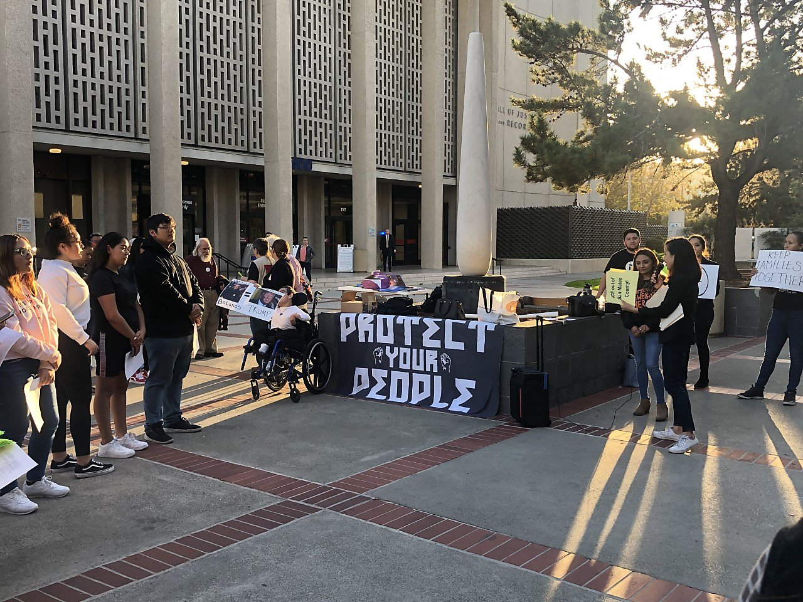
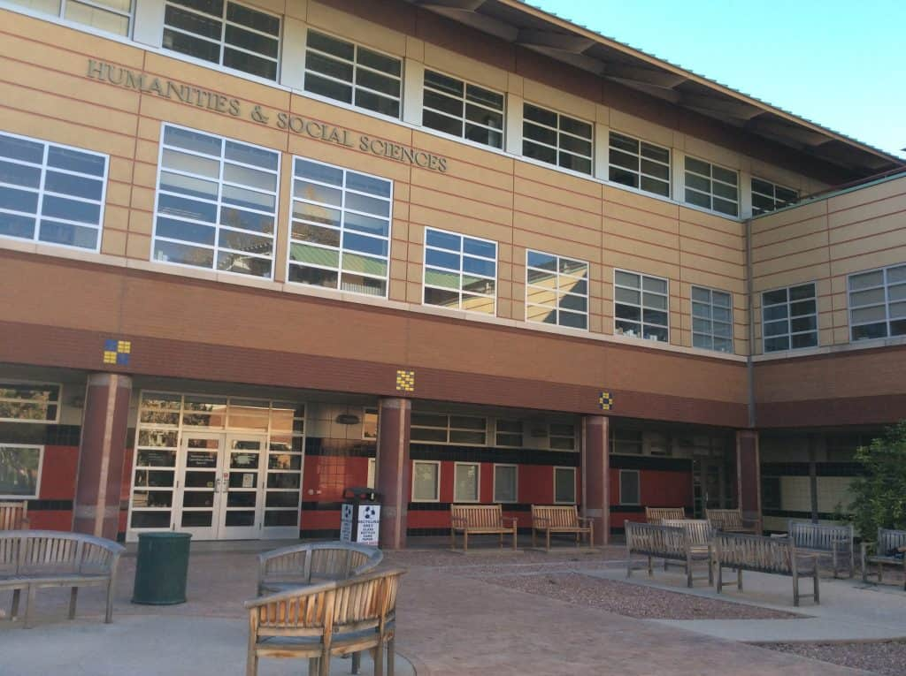
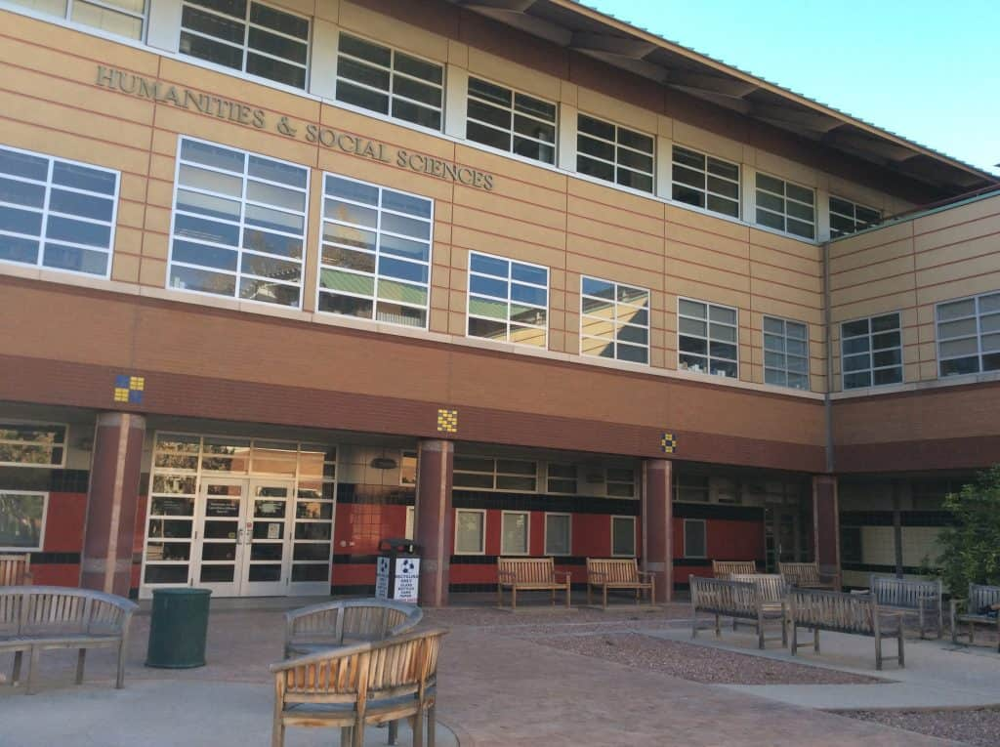

Carlos Estrada
Carlos Estrada is a dedicated and ambitious individual with a passion for social dynamics and community development. Currently pursuing a Bachelor of Arts degree in Sociology at the University of California Riverside, they are driven to understand the intricate webs of society and the impact they have on individuals and communities. With a strong academic background and a consistent commitment to personal growth, Carlos Estrada strives to make a meaningful difference in the world.
Having completed their high school education at Eastside College Preparatory School, Carlos Estrada graduated with a remarkable 3.60/4.00 GPA. Throughout their academic journey, they demonstrated exceptional discipline, focus, and determination to achieve excellence. Beyond academics, they actively engaged in extracurricular activities, showcasing their multifaceted talents and leadership skills.
As an intern at San Mateo County's Human Resources/Procurement department, Carlos Estrada made valuable contributions during their tenure. They developed step-by-step templates for professional development, providing county employees in the Bay Area with the tools to enhance their skills and advance their careers. Their attention to detail and organizational abilities were evident as they updated contracts and streamlined mail service routes, ensuring efficient delivery throughout San Mateo County.
During their contract role at Anaplan, a leading technology company, Carlos Estrada displayed a talent for data management and problem-solving. They successfully maintained data from LinkedIn, creating an improved contact-search system within the organization's cloud platform. Collaborating with a team of professionals, they actively participated in brainstorming sessions via Zoom calls, contributing to the development of an effective search strategy. Through their efforts, the organization's database of desired contacts expanded, supporting the sales team's objectives.
Passionate about environmental sustainability, Carlos Estrada served as a Teen Urban Forester at Canopy, a local nonprofit organization. They worked closely with a diverse team of volunteers to plant trees in schools and parks, enhancing the aesthetics of the community while promoting clean air and a greener environment. Through their dedication to environmental initiatives, Carlos Estrada demonstrated a deep commitment to fostering positive change within their community.
Carlos Estrada's involvement as a volunteer in the YMCA Youth & Government program further exemplifies their dedication to civic engagement and leadership development. Collaborating with a team of volunteers, they researched, drafted, and advocated for a bill aimed at addressing the increasing house rental prices in their community. Their participation in legislative processes and public speaking engagements honed their critical thinking, problem-solving, and teamwork skills.
In addition to their academic and professional pursuits, Carlos Estrada possesses proficiency in various software tools, including Microsoft Word, PowerPoint, Google Drive, Docs, Slides, and Sheets. Their technological acumen, combined with their strong communication skills, enables them to effectively convey complex information and collaborate seamlessly in a digital environment.
Fluent in Spanish, Carlos Estrada embraces cultural diversity and values effective communication across linguistic barriers. This language proficiency allows them to connect with diverse communities and contribute to bridging gaps in understanding.
With an unwavering commitment to personal and professional growth, Carlos Estrada strives to make a positive impact on society. Their educational background, work experiences, and volunteer engagements have equipped them with a well-rounded skill set and a deep understanding of social dynamics. Carlos Estrada is eager to leverage their knowledge and abilities to foster positive change and create a better future for all.
Experience
Human Resources/Procurement
• Played an integral role in the Human Resources/Procurement department, assisting in various administrative tasks and projects
• Developed step-by-step templates for professional development, enabling all county employees in the Bay Area to enhance their skills and advance their careers
• Updated contracts and efficiently assigned routes for mail services, ensuring smooth and timely delivery across San Mateo County
Contractor
• Worked as a contractor for Anaplan, a leading technology company, supporting data management and contact-search system improvements
• Managed data from LinkedIn and organized it into spreadsheets, creating a more streamlined and efficient contact-search system for the organization's cloud platform
Teen Urban Forester
• Contributed to environmental conservation efforts as a Teen Urban Forester at Canopy, a local nonprofit organization
• Collaborated with approximately 25 volunteers on multiple occasions to plant trees in local schools and parks, enhancing the area's beauty and promoting sustainable urban ecosystems
• Played a crucial role in improving air quality and fostering community engagement through environmental initiatives
Education
University of California Riverside
Graduating 2024
Portfolio




